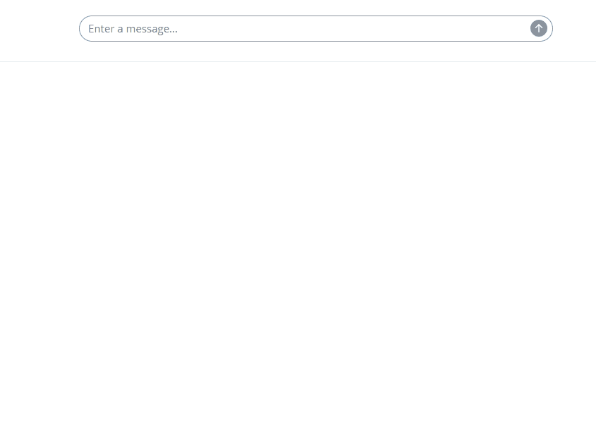

Building simple Shiny app with a chatbot
building-shiny-app-chatbot.RmdDemo App Specs
In this vignette we show how to build a simple Shiny app with a chat bot, like this one: GitAI-demo

As you can see, the demo app has a chatbot that answers are based on the results from processed content of multiple git repositories.
To build this app:
- We scanned 800+ repositories in multiple public GitHub
organizations:
r-world-devs,openpharma,pharmaverse,tidymodels,r-lib,rstudio,tidyverse,insightsengineering. - In the repositories we have scanned the following files types:
DESCRIPTION,*.md, and*.Rmd, so it includes files likeREADME.mdor R package vignettes. - We have used simple and cheap LLM
gpt-4o-minifrom OpenAI. - For embeddings we use
multilingual-e5-largeembedding model from Pinecone as well as its vector database with 1024 dimensions.
The overall one-time cost of processing all 800+ repositories is less then $1 with this setup (yes, one USD!). Even more impressive results can be achieved with more powerful LLMs, and higher-dimensional embeddings.
Processing Git repositories with LLM
library(GitAI)First, we need to set up a GitAI project which we call
my_project. We also setting up a Pinecone
database and default provided of LLM which is openai with
its gpt-4o-mini model.
my_project <- initialize_project("gitai-demo") |>
set_database(
provider = "Pinecone",
index = "gitai"
) |>
set_llm(seed = 1014, api_args = list(temperature = 0))Next, we need to provide a list of repositories or groups of repositories that we want to scan. We also define the files types that we want to process within each repository (if present).
my_project <- my_project |>
set_github_repos(
repos = c(
"r-world-devs/GitStats",
"r-world-devs/GitAI",
"r-world-devs/cohortBuilder",
"r-world-devs/shinyCohortBuilder",
"r-world-devs/shinyQueryBuilder",
"r-world-devs/queryBuilder",
"r-world-devs/shinyGizmo",
"r-world-devs/shinyTimelines",
"openpharma/DataFakeR"
),
orgs = c(
"insightsengineering",
"openpharma",
"pharmaverse",
"tidymodels",
"r-lib",
"rstudio",
"tidyverse"
)
) |>
add_files(c(
"DESCRIPTION",
"*.md",
"*.Rmd"
))Next we need to define a prompt for the LLM. This might be improved in multiple iterations to get the best possible results.
my_project <- my_project |>
set_prompt(r"(
Write up to ten paragraphs of summary for a project based on given input.
Be precise and to the point in your answers.
Mention core functionality and all main features of the project.
If available, mention brifly the technology used in the project
(like R, Python, etc).
If available, mention brifly if a project is an R package, shiny app,
or other type of tool.
)")Next step is optional, and hopefully won’t be needed in the future.
What it does it changes the default chat_perform_value
function in the ellmer package to make it more robust for
the LLM provider API errors. If you don’t get any timeout errors, you
can safely ignore this step.
ellmer:::chat_perform_value
custom_function <- function(provider, req) {
req <- req |>
httr2::req_timeout(60 * 10) |>
httr2::req_retry(
max_tries = 10,
retry_on_failure = TRUE
)
req |>
httr2::req_perform() |>
httr2::resp_body_json()
}
unlockBinding("chat_perform_value", asNamespace("ellmer"))
assign("chat_perform_value", custom_function, envir = asNamespace("ellmer"))
lockBinding("chat_perform_value", asNamespace("ellmer"))Now you can process the repositories with a single function call. As we defined vector database, the result will be written to it.
In case of error you can just repeat the function call. If the repository content hasn’t changed, and the results are already in the database, the function will skip processing the repository and move to the next one.
results <- process_repos(my_project)Semantic search queries
Once the repositories are processed and stored in a vector database, we can use semantic search queries to find the results.
As you can see for that we need to define only our project, database, and LLM.
my_project <- initialize_project("gitai-demo") |>
set_database(
provider = "Pinecone",
index = "gitai"
) |>
set_llm(seed = 1014, api_args = list(temperature = 0))
my_project |>
find_records(
"How can I create fake data based on SQL tables?",
top_k = 1
) |>
purrr::walk(~ cat(
.x$metadata$text |>
stringr::str_sub(end = 1000) |>
stringr::str_wrap(width = 80) |>
paste0("...")
))
#> DataFakeR is an R package designed to generate fake data for relational
#> databases while preserving the structure and constraints of the original data.
#> The package is particularly useful for developers and data scientists who need
#> to create realistic datasets for testing, development, or demonstration purposes
#> without exposing sensitive information. The current version, 0.1.3, includes
#> several enhancements and bug fixes, making it a robust tool for data simulation.
#> The core functionality of DataFakeR revolves around its ability to read a
#> schema description in YAML format, which defines the structure of the database
#> tables, including columns, data types, constraints, and relationships. Users can
#> source this schema from an existing database or define it manually. The package
#> supports various data types, including character, numeric, integer, logical,
#> and date, allowing for a wide range of data generation scenarios. One of the
#> standout features of DataFakeR is its support for determinist...Shiny chatbot with RAG
Now it’s time for building our shiny app.
The app will use shinychat for a chatbot and
ellmer for answering user questions. But before providing
the answer to the user, the prompt will be augmented with top k results
from semantic search.
library(shiny)
library(shinychat)
library(GitAI)
gitai <- initialize_project("gitai-demo") |>
set_database(index = "gitai") |>
set_llm(seed = 1014, api_args = list(temperature = 0)) |>
set_prompt(r"(
As a helpful assistant, answer user question
using only the provided input.
Use only provided with the query known input
that is most relevent to the user's query.
Do not use any other information
apart from the input provided with the query.
Be concise but provide all important information.
Also awalys provide link to mentioned git repositories
with visible full URL for example: https://github.com/some_repository.
Do not mask it with any other text.
)")
ui <- bslib::page_fluid(
bslib::layout_sidebar(
sidebar = shiny::sliderInput(
"top_k",
"Use top K results",
step = 1,
min = 1,
max = 10,
value = 5
),
chat_ui("chat")
)
)
server <- function(input, output, session) {
user_chatbot <- gitai$llm$clone()
shiny::observeEvent(input$chat_user_input, {
query <- input$chat_user_input
stream <- user_chatbot$stream_async(
paste(
"User query:", query, "\n\n",
"Known input provided for the answer:\n\n",
gitai$db$find_records(query = query, top_k = input$top_k)
)
)
chat_append("chat", stream)
})
}
shinyApp(ui, server)